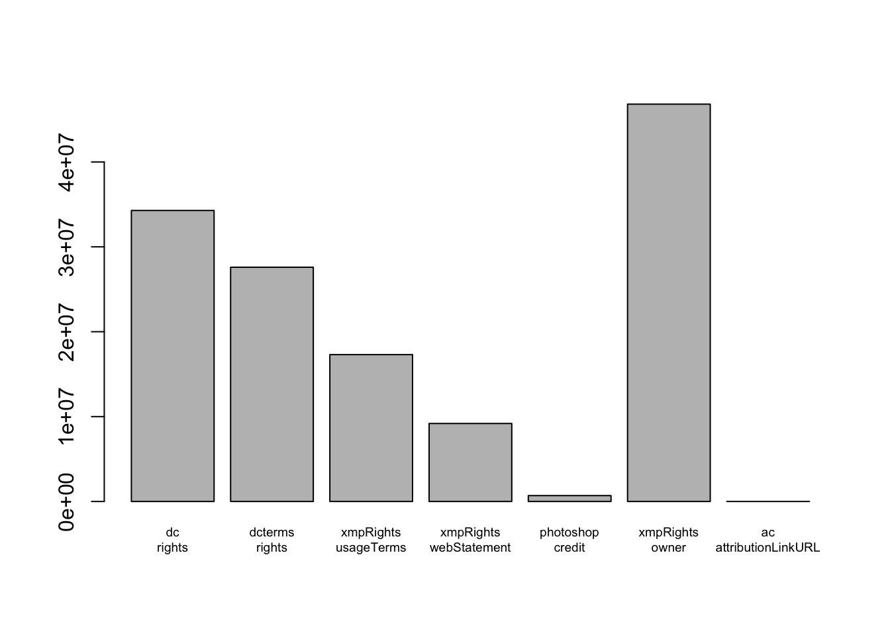
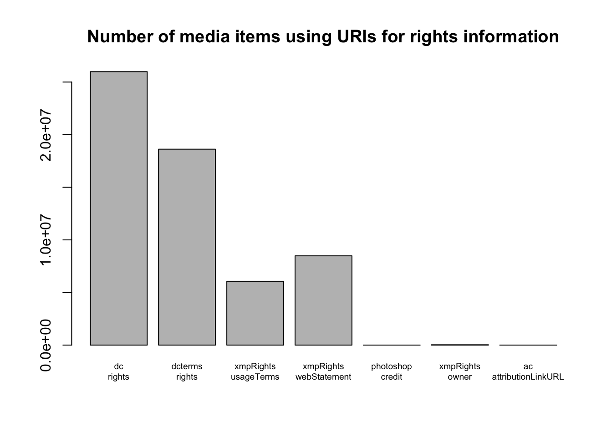

The TDWG Audiovisual Core (AC) standard includes terms for describing rights information for media items. In response to issues raised on the AC GitHub repository, this analysis was conducted to determine the extent to which these terms are used in media items on GBIF.
The data represents 77,668,167 media items from 534 datasets provided by GBIF. Datasets are included only if they make use of the AC extension.
The AC standard includes the following terms for rights information:
dc:rights: A full-text, readable copyright statement,
as required by the national legislation of the copyright holder.dcterms:rights: A URI pointing to structured
information about rights held in and over the resourcexmpRights:usageTerms: The license statement defining
how resources might be used. Information on a collection applies to all
contained objects unless the object has a different statement.xmpRights:webStatement: A URL defining or further
elaborating on the license statement (e. g., a web page explaining the
precise terms of use).photoshop:credit: The credit to person(s) and/or
organisation(s) required by the supplier of the item to be used when
published. This is a free-text field.xmpRights:owner: A list of the names of the owners of
the copyrightThe following terms are not used in any of the datasets:
xmpRights:owner.

75 datasets (representing 1,745,564 media items) use neither
dc:rights nor dcterms:rights. One or other of
these terms are required by the AC standard, so a significant number of
datasets are potentially not compliant.

GBIF/TDWG Multimedia Resources Task Group and Audiovisual Core Maintenance Group. 2023. Audiovisual Core Term List. Biodiversity Information Standards (TDWG). http://rs.tdwg.org/ac/doc/termlist/2023-09-05.